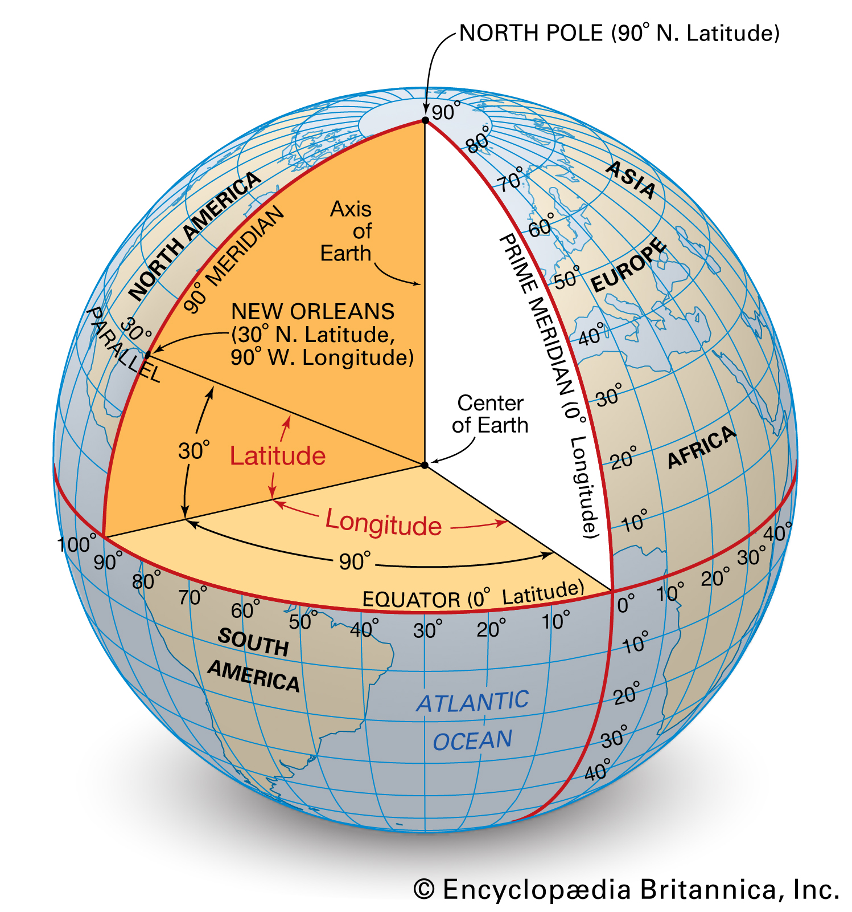
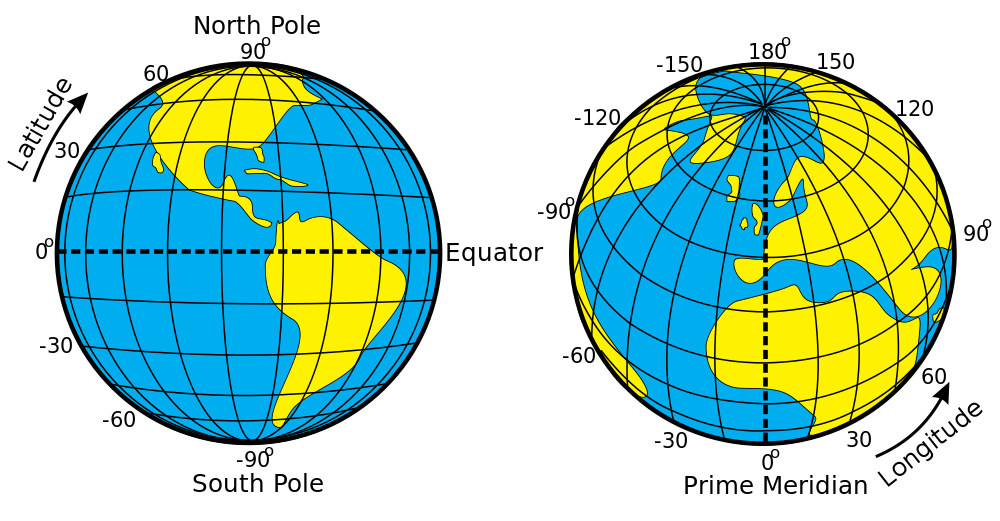

Class 2 - Lecture
Latitude + Longitude, Coordinate Systems, GPS, Precision & Metadata, Descriptions & Summaries
Coordinate Systems & Spaces
Rectangular, Cartesian Coordinate System
Source: Rectangular Coordinate System
Coordinate Systems & Spaces
Geographic Coordinate System
- A geographic coordinate system is a system that uses a three-dimensional spherical surface to determine locations on the Earth.
- A sphere is a solid figure where every point on the surface is equidistant from the center of the sphere. This distance is the radius, r, of the sphere.
Source: Sphere Formula
Coordinate Systems & Spaces
Geographic Coordinate System

Source: Britannica Definition
Coordinate Systems & Spaces
Geographic Coordinate System

Source: Maps and Atlases
Coordinate Systems & Spaces
Geographic Coordinate System - quads
Coordinate Systems & Spaces
Geographic Coordinate System - quads
Coordinate Systems & Spaces
Geographic Coordinate System - Null Island
Source: Null Island
Coordinate Systems & Spaces
Lines of Latitude and Longitude
- Lines of latitude are known as parallels.
- Lines of longitude are known as meridians.
- Taken together, these lines form a graticule, a spherical grid of latitude and longitude lines.
Coordinate Systems & Spaces
Lines of Latitude
Source: Lines of Latitude
Coordinate Systems & Spaces
Lines of Latitude
Latitude is the system of measurement that runs east to west across the globe, dividing the Earth into north and south. It divides the earth into two hemispheres, with 90 degrees of latitude in the northern hemisphere and 90 degrees of latitude in the southern hemisphere. The Equator, middle of the globe, is at 0 degrees latitude.
Coordinate Systems & Spaces
Lines of Latitude
Source: Lines of Latitude
Coordinate Systems & Spaces
Lines of Longitude
Source: Lines of Longitude
Coordinate Systems & Spaces
Lines of Longitude
Longitude divides the globe into east and west halves, centered on a line called the Prime Meridian, or 0 degrees longitude. Every other line that runs north to south across the globe is known as a meridian, and it measures one degree of the entire Earth’s circumference. There are 360 degrees of longitude total, with 180 being west of the Prime Meridian and 180 being east of the Prime Meridian.
Coordinate Systems & Spaces
Lines of Longitude
Source: Lines of Longitude
Coordinate Systems & Spaces
Positioning within Lines of Latitude + Longitude (Graticule)

Source: Coordinate Systems
GPS
Global Positioning Systems (GPS)
As of February 2019, 31 satellites currently make up the GPS space segment, orbiting the earth about 12,000 miles above us. Each GPS satellite carries an accurate record of its own position and time, and broadcasts that data continuously. Based on data received from multiple GPS satellites, an end user’s GPS receiver can calculate its own four-dimensional position in space and time.
Source: GPS Space Segment
GPS
GPS satellite factoids:
- The official USDOD name for GPS is NAVSTAR.
- The first GPS satellite was launched in 1978; a full constellation of 24 satellites was achieved in 1994.
- Each satellite is built to last about 10 years. Replacements are constantly being built and launched into orbit.
- A GPS satellite weighs approximately 2,000 pounds and is about 17 feet across with the solar panels extended.
- GPS satellites are powered by solar energy, but they have backup batteries onboard, in case of a solar eclipse.
Source: Garmin
GPS
Global Positioning Systems (GPS)

Source: Satellites
{kind=link}
GPS
Global Positioning Systems (GPS)
Source: Orbital Altitudes
{kind=link}
GPS
GPS Handheld Interface (User Segment)
Source: GPS
GPS
An iPhone GPS unit
Source: GPS
GPS
GPS unit formatting
- WGS stands for World Geodetic System.
- The latest revision is WGS 84 (also known as WGS 1984, EPSG:4326), established and maintained by the United States National Geospatial-Intelligence Agency since 1984, and last revised in 2014.
Source: GPS
Coordinate Systems & Spaces
Coordinate Formatting
Precision
Numeric Precision
- Numeric values can be described by precision and scale.
Prepresents the total number of all digits andSrepresents the two digits after the decimal.
Source: Precision
Precision + Scale
Geographic Precision - lat/lon digital expression
- Digits right of a decimal point specify the scale dimension of the digital number in a latitude/longitude pairing.
Precision + Scale
Charles and Ray Eames Powers of Ten Short Movie (1977)

Source: Powers of Ten Movie
Precision + Scale
Geographic Precision can be taken to absurd lengths…
Source: Geographic Precision
Precision + Accuracy
- Precision is how close each of the data points are to each other.
- Accuracy is how close to the target the data points are.
Metadata
Metadata is “data that provides information about other data”
Metadata
Metadata can/should answer the following questions:
- What does the data set describe?
- Who produced the data set?
- How and why was the data set created?
- How reliable are the data; what problems remain in the data set?
- How can someone get a copy of the data set?
Source: Metadata
Metadata
Geospatial Metadata Example: Fire Information for Resource Management System (FIRMS)
Source: Metadata
Descriptions and Summaries
Foundational EDA1 - Describe, Summarize and analyze geospatial datasets
- Variable: a symbol used to represent any given value or set of values
- Value: an individual observation of a variable (in GIS, referred to as a record)
- Population: the universe of all possible values for a variable
- Sample: a subset of the population
Descriptions and Summaries
Foundational EDA1 - Describe, Summarize and analyze geospatial datasets
- n: number of observations for a variable
- Array: a sequence of observed measures (in GIS, referred to as a field and represented in a table as a column)
- Sorted Array: an ordered, quantitative array
Descriptions and Summaries
Rates & Density (Standardization)
Rates (Density) per geographic unit:
- n (observations) per acre
- n (observations) per square mile
- n (observations) per square kilometer
Descriptions and Summaries
Rates & Density (Standardization)
- Formula:
n/total area of geographic boundary (polygon) measured by a geographic unit - Expression:
number of n per square mile;number of n per square acre;number of n per square kilometer